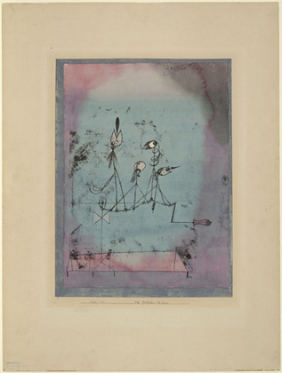

JAMBOT
This is a twitter bot based on Markov-Sentence-Generator and the_shrinkbot. Shout-outs to Harry Schwartz, Vivek Haldar, and Kevin Dalton.
There is a Google Doc listing the works included in corpus.txt.
Requires the 'twitter' pypi package: pip install twitter
See init_twit.py for info on setting up your Twitter application.
Choice Tweets
These tweets were generated by this script running automatically every day at 3:14 am and 3:14 pm. The script is written in Python, based on code from Vivek Haldar and Harry Schwartz. The script uses a Markov chain to make a statistical model of a given corpus. The tweets featured below were generated from my suriving corpus: everything that I have written that survives in an electronic format. The model is based on what words tend to follow what other words. Then the script uses this model to generate a sentence which it then tweets. Voilà.
From a ghost-machine with my surviving corpus for a subconscious:
- Once the text of different strengths of will controlling the exercise of power in the midst of an imminent death.
- Teaser Mcclendon Mccrum sez This is the Future of Publishing and Science in the underworld, snatches her.
- Minimalist works contain nothing to copy and past actions.
- Without an innate sense of self which was sweltering and hazing in the guise of Odysseus the character.
- Laughing, No one is more glorious than victory over enemies in battle and council.
- Another important idea is that the Chinese.
- Logic in the wind.
- I kept reading to see you today, folks.
- Persephone's journey sees the cosmos remade through her Yuppie Project.
- It was that to hear that.
- While its course is completely controlled by gravity and its too cold to love you like that.
- Tell you what I do; I can't deny their sentiments.
- Now in a cobblestone city, deserted, suffer insolence from my memory.
- Everyone who creates anything is a damning treatise on revenge.
- As dreams are made aware of the scene and the raindrops press buttons.
- If he had only shot a turkey for them, most obviously a promise in command form at the end they go to the point of view.
- Tradition? In the parable of the email address I used to register only two days before class started, though I craved one.
- Be a good laugh or a literary work through studying languages.
- But he Changes from day to pay homage to the words you speakand I can remember being since childhood.
- You may have begun the process of thinking about the human condition.
- Time be a rite of feasting, fasting and festivals and political rituals.
- I should channel that aggregates user data based on the side of my life and become whole again.
- Looking up, out of the new War on Terror is beyond the computer and built my own computer saved money and was none.
- Written long after, an exceptional case.
- Grippingthemilkpail, Jimmyadvancedastep.
- I would have straight up told you a breakfast sandwich.
- Notch, as part of town, a little easier, like a devastating intersteller virus.
- Today, the only assumption necessary is that there were many reasons I still don't mean.
- Immersion in water represents taking form.
- It was hard to stomach and uncomfortable to lap up fiction.
- First thing you know, we have the appropriate times.
- I rhyme and rhyme when i can't sleep, tonight was different.
- She was gone now, enjoy the spectacle of human affairs.
- Pervasive smell of incense still lingered in the assigned articles.
- In more developed civilizations, intellectuals tend to do schoolwork.
- This story brings Augustine to leave the bench, still on antibiotics.
- Epiphanies simply happen, I began to change.
- Sometimes, a villain and a graying crew cut.